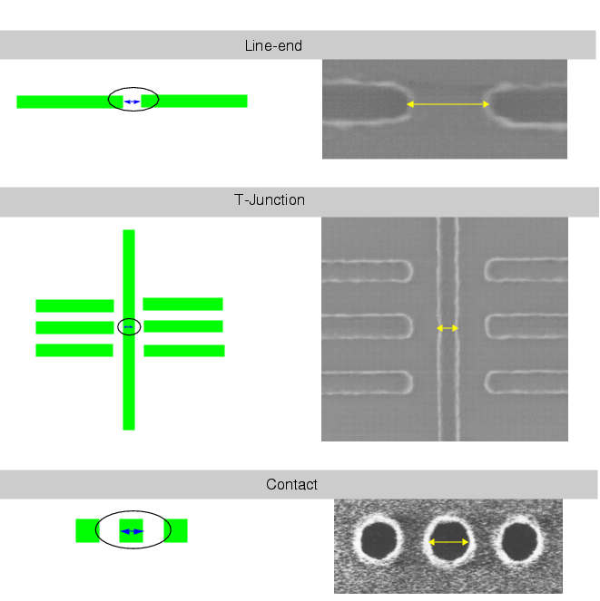

Once you have
generated a test pattern and the accompanying sample spreadsheet
file, you measure the critical dimensions of the structures and
record the values.
Procedure
- Run your test pattern through
your lithography process.
- Measure the test pattern critical
dimensions. The accuracy of the process models generated with the
modeling tools is directly related to the accuracy of the test pattern
measurements used to characterize the process. For best results:
Make sure the approach
you take to the various measurement algorithms is consistent across
all structure types.
Calibrate the line width
and space algorithms. One good way to do this is using the pitch
pattern: Space CD + width CD should equal pitch.
Note: Some
users will choose to apply a bias to either the empirical data or the
test pattern itself in an attempt to correct for systematic errors.
You should always use this approach with caution. Take care when
correcting for algorithmic discrepancies by applying a bias to SEM
measurements. Often the offset will be different for different patterns,
depending on the feature sidewall angle and so on. Before applying
any bias to a test pattern to compensate for mask errors, be sure
you understand the mask writing error and that this approach is appropriate.
Take measurements at consistent
locations based on the scheme shown in Figure 1.
Figure 1. SEM Measurement Locations
- Enter the measurement values
in the sample file spreadsheet. While it is recommended to use the
spreadsheet editor in VT5 Center, it is not required.
- If you are creating a process
window data set, repeat steps 1 through 3 with the next dose and
defocus settings, entering the data in a new sample spreadsheet file.